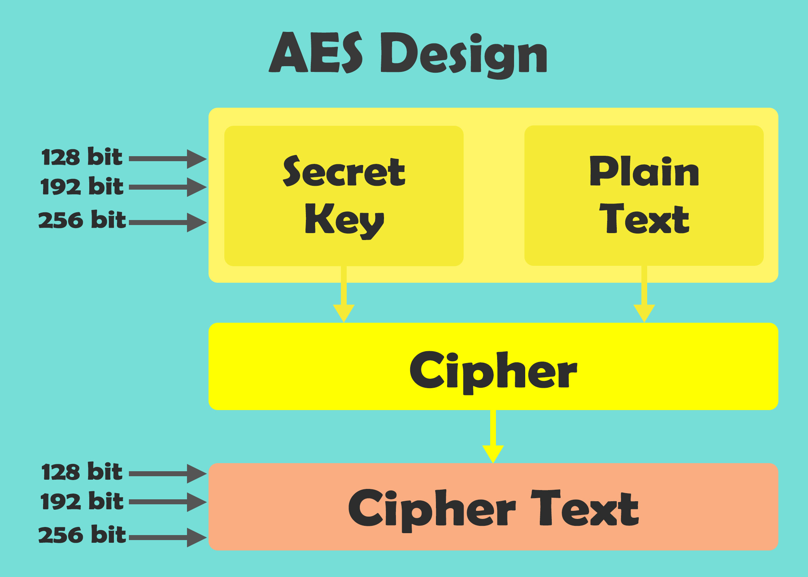
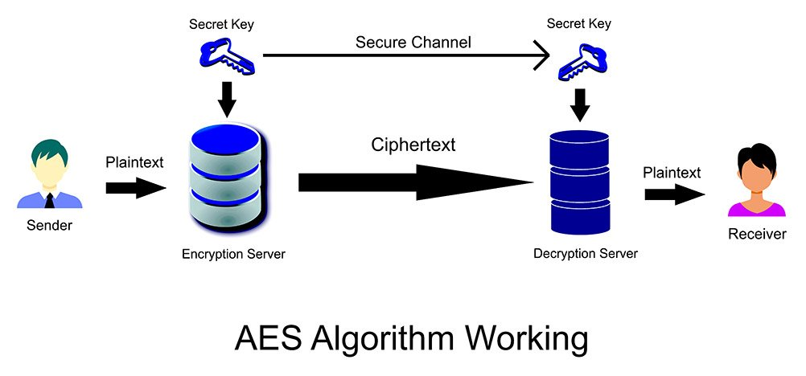

AES ALGORITHM
When the Data Encryption Standard algorithm, also known as the DES algorithm, was formed and standardized, it made sense for that generation of computers. Going by today’s computational standards, breaking into the DES algorithm became easier and faster with every year, as seen in the image below.A more robust algorithm was the need of the hour, with longer key sizes and stronger ciphers to break into. They created the triple DES to fix this problem, but it never became mainstream because of its relatively slower pace. Thus, the Advanced Encryption Standard came into existence to overcome this drawback.The AES Encryption algorithm (also known as the Rijndael algorithm) is a symmetric block cipher algorithm with a block/chunk size of 128 bits. It converts these individual blocks using keys of 128, 192, and 256 bits.


How It Works

It saves the file with passcode protection and decrypts only when someother user when runs the decrypt script with correct passcode.The file is generated with explicit mention of encrypt.

You have to enter the name of the text file you want to encypt.It is very hard to crack by brute force approach.It contains more davance level of encryption.

It will encrypt the file using AES algorithm.You can visit to see the practical implementation and can fork to run the same on your local computer.